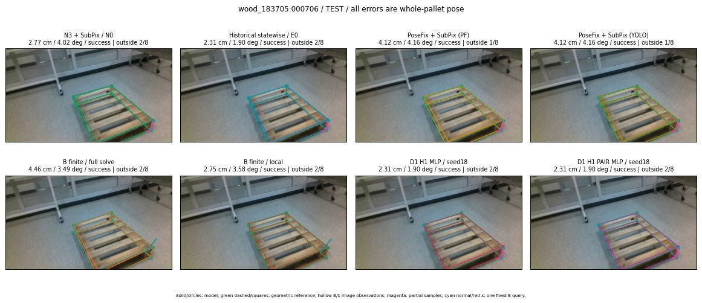

Whole-pallet pose errors; reference is a fixed geometric annotation, not certified physical GT.

Scores are uncalibrated logits. N0 retention is a numerical pose alias; it differs from H0 none or B fallback. B/I and profiles in baseline/B panels are original observations; L panels use new D1 observations. Only one deterministic supported B query is shown in a thumbnail; full support counts are below. Grey privacy rectangles edit the display copy only and are unrelated to O states; all observations were measured on original pixels. Thumbnails use JPEG quality85; detailed scientific panels are PNG.
| Method | Whole pose / cm, deg | Actual source | Selected ID | Score | Archived candidates | Eligible | N0 retained | H0 none | Fallback | Finite profiles |
|---|---|---|---|---|---|---|---|---|---|---|
| Raw YOLO + F | 3.14 cm / 4.66 deg / success | OTHER | None | N/A | N/A | N/A | False | N/A | None | N/A |
| N3 + SubPix / N0 | 2.77 cm / 4.02 deg / success | N0 | None | N/A | N/A | N/A | True | N/A | None | N/A |
| Historical statewise / E0 | 2.31 cm / 1.90 deg / success | E0_REGENERATED | None | N/A | N/A | N/A | False | N/A | False | N/A |
| PoseFix raw | 3.97 cm / 4.22 deg / success | OTHER | None | N/A | N/A | N/A | False | N/A | None | N/A |
| PoseFix + SubPix (PF) | 4.12 cm / 4.16 deg / success | OTHER | None | N/A | N/A | N/A | False | N/A | False | historical support records 9; finite audit N/A |
| PoseFix + SubPix (YOLO) | 4.12 cm / 4.16 deg / success | OTHER | None | N/A | N/A | N/A | False | N/A | False | historical support records 9; finite audit N/A |
| Historical L, seed18 | 2.31 cm / 1.90 deg / success | OTHER | NEW/fixed/ORIGINAL_WD/h0/N0_LOCAL_START | N/A | 109 | 109 | False | False | False | N/A |
| Historical B fixed bank | 2.31 cm / 1.90 deg / success | OTHER | LOGGED/G13/ORIGINAL_WD/outline_consider/173 | N/A | N/A | N/A | False | N/A | False | N/A |
| Historical B full | 4.48 cm / 3.52 deg / success | OTHER | NEW/B/ORIGINAL_WD/h0/LOGGED/G13/ORIGINAL_WD/outline_consider/151/PROPOSED_NATIVE_YAW_0 | N/A | N/A | N/A | False | N/A | False | N/A |
| Historical edge full | 21.13 cm / 17.13 deg / failure | OTHER | NEW/edge/ORIGINAL_WD/h0/LOGGED/G13/ORIGINAL_WD/outline_consider/151/PROPOSED_NATIVE_YAW_0 | N/A | N/A | N/A | False | N/A | False | N/A |
| Historical AB full | 4.48 cm / 3.52 deg / success | OTHER | NEW/AB/ORIGINAL_WD/h0/LOGGED/G13/ORIGINAL_WD/outline_consider/151/PROPOSED_NATIVE_YAW_0 | N/A | N/A | N/A | False | N/A | False | N/A |
| B finite / fixed bank | 2.77 cm / 4.02 deg / success | N0 | N0 | N/A | N/A | N/A | True | N/A | False | 21/21 |
| B finite / full solve | 4.46 cm / 3.49 deg / success | OTHER | NEW_FINITE/B/ORIGINAL_WD/h0/LOGGED/G13/ORIGINAL_WD/outline_consider/151/PROPOSED_NATIVE_YAW_0 | N/A | N/A | N/A | False | N/A | False | 21/21 |
| B finite / local | 2.75 cm / 3.58 deg / success | OTHER | NEW_FINITE/B/ORIGINAL_WD/h0/N0_LOCAL_SAME_PHYSICAL_POSE/ORIGINAL_WD | N/A | N/A | N/A | False | N/A | False | 21/21 |
| Edge finite / full solve | 2.77 cm / 4.02 deg / success | N0 | N0 | N/A | N/A | N/A | True | N/A | False | 21/21 |
| D0 H0 MLP / seed18 | 2.31 cm / 1.90 deg / success | OTHER | G13/ORIGINAL_WD/endpoint/173 | 3.8109631538391113 | 85 | 85 | False | False | False | N/A |
| D0 H0 MLP / seed19 | 2.31 cm / 1.90 deg / success | OTHER | G13/ORIGINAL_WD/endpoint/173 | 3.1083743572235107 | 85 | 85 | False | False | False | N/A |
| D0 H0 MLP / seed20 | 2.31 cm / 1.90 deg / success | OTHER | G13/ORIGINAL_WD/endpoint/173 | 1.0761703252792358 | 85 | 85 | False | False | False | N/A |
| D0 H1 MLP / seed18 | 2.31 cm / 1.90 deg / success | OTHER | G13/ORIGINAL_WD/endpoint/173 | -1.542383074760437 | 85 | 85 | False | False | False | N/A |
| D0 H1 MLP / seed19 | 2.31 cm / 1.90 deg / success | OTHER | G13/ORIGINAL_WD/endpoint/173 | -0.5996021032333374 | 85 | 85 | False | False | False | N/A |
| D0 H1 MLP / seed20 | 2.31 cm / 1.90 deg / success | OTHER | G13/ORIGINAL_WD/endpoint/173 | -1.8345038890838623 | 85 | 85 | False | False | False | N/A |
| D1 H0 MLP / seed18 | 2.41 cm / 1.80 deg / success | OTHER | G10/ORIGINAL_WD/endpoint/5 | 6.424193382263184 | 85 | 85 | False | False | False | N/A |
| D1 H0 MLP / seed19 | 2.31 cm / 1.90 deg / success | OTHER | G13/ORIGINAL_WD/endpoint/173 | 6.03240442276001 | 85 | 85 | False | False | False | N/A |
| D1 H0 MLP / seed20 | 2.77 cm / 4.02 deg / success | N0 | N0 | 5.613205909729004 | 85 | 85 | True | True | True | N/A |
| D1 H1 MLP / seed18 | 2.31 cm / 1.90 deg / success | OTHER | G13/ORIGINAL_WD/endpoint/173 | 1.3122079372406006 | 85 | 85 | False | False | False | N/A |
| D1 H1 MLP / seed19 | 2.31 cm / 1.90 deg / success | OTHER | G13/ORIGINAL_WD/endpoint/173 | 0.8496431708335876 | 85 | 85 | False | False | False | N/A |
| D1 H1 MLP / seed20 | 2.31 cm / 1.90 deg / success | OTHER | G13/ORIGINAL_WD/endpoint/173 | 1.5971274375915527 | 85 | 85 | False | False | False | N/A |
| D1 H1 ROLE AFFINE / seed18 | 2.77 cm / 4.02 deg / success | N0 | N0 | 1.662129282951355 | 85 | 85 | True | False | False | N/A |
| D1 H1 ROLE AFFINE / seed19 | 2.77 cm / 4.02 deg / success | N0 | N0 | 0.5562819838523865 | 85 | 85 | True | False | False | N/A |
| D1 H1 ROLE AFFINE / seed20 | 2.77 cm / 4.02 deg / success | N0 | N0 | 1.4362778663635254 | 85 | 85 | True | False | False | N/A |
| D1 H1 PAIR MLP / seed18 | 2.31 cm / 1.90 deg / success | E0_REGENERATED | E0_REGENERATED | -0.044381074607372284 | 85 | 2 | False | False | False | N/A |
| D1 H1 PAIR MLP / seed19 | 2.31 cm / 1.90 deg / success | E0_REGENERATED | E0_REGENERATED | 0.9407925605773926 | 85 | 2 | False | False | False | N/A |
| D1 H1 PAIR MLP / seed20 | 2.31 cm / 1.90 deg / success | E0_REGENERATED | E0_REGENERATED | 1.4579664468765259 | 85 | 2 | False | False | False | N/A |
| D1 H1 PAIR ROLE AFFINE / seed18 | 2.31 cm / 1.90 deg / success | E0_REGENERATED | E0_REGENERATED | 0.6546363830566406 | 85 | 2 | False | False | False | N/A |
| D1 H1 PAIR ROLE AFFINE / seed19 | 2.31 cm / 1.90 deg / success | E0_REGENERATED | E0_REGENERATED | 0.8554026484489441 | 85 | 2 | False | False | False | N/A |
| D1 H1 PAIR ROLE AFFINE / seed20 | 2.31 cm / 1.90 deg / success | E0_REGENERATED | E0_REGENERATED | 0.6570916175842285 | 85 | 2 | False | False | False | N/A |
| Regenerated common E0 | 2.31 cm / 1.90 deg / success | E0_REGENERATED | E0_REGENERATED | N/A | N/A | N/A | False | N/A | False | N/A |